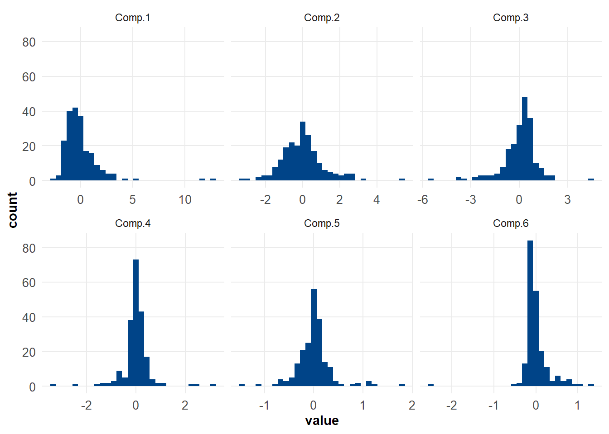
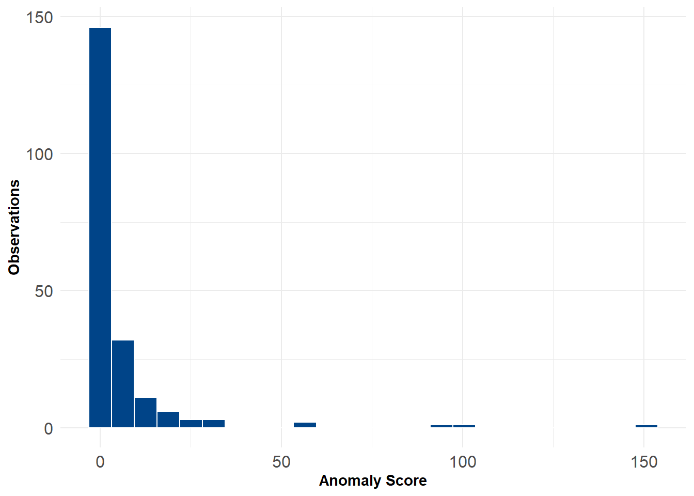
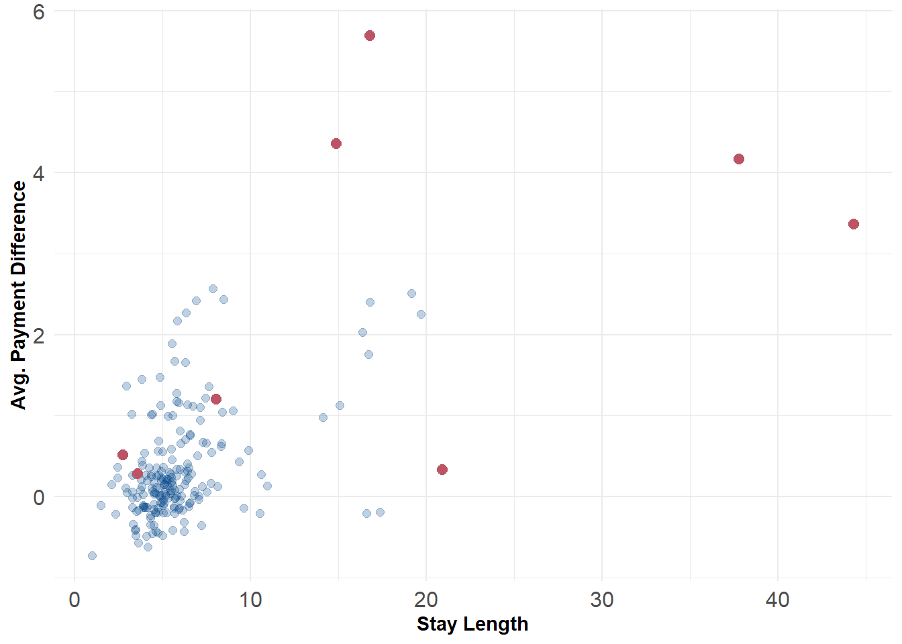

Code
library(tidyverse)
hosp <- read_csv("Hospital_Inpatient_Discharges__SPARCS_De-Identified___2021.csv")Part 1: Principal components anomaly detector
Gio Circo, Ph.D.
April 7, 2023
I strongly believe in “learning by doing”. One of the things I have been working on quite a bit lately is unsupervised anomaly detection. As with many machine-learning tools, ensembles are incredibly powerful and useful for a variety of circumstances. Anomaly detection ensembles are no exception to that rule. To better understand how each of the individual pieces of a anomaly detection ensemble works, I’ve decided two build one myself “from scratch”. I put that in giant quotes here because I’ll still rely on some existing frameworks in R to help built the underlying tools.
My idea is to create an ensemble of several heterogeneous anomaly detection methods in a way that maximizes their individual benefits. Following some of the guidance proposed by Aggarwal & Sathe I will use:
The data for this post comes from the state of New York’s Hospital Inpatient Discharges (SPARCS) data for 2021. This data contains about 2.1 million records on hospital discharges, including some de-identified patient information, procedure types, and costs. From an anomaly detection standpoint, it might make sense to see if we can identify hospitals with anomalous costs relative to other New York Hospitals. Like the New York Times reported, hospitals make up a very substantial portion of what we spent on healthcare.
We’ll create a quick feature set based on a few key payment variables. Here I aggregate over each of the hospitals by calculating their (1) average stay length, (2) average charges, (3) average costs, (4) their average cost-per-stay, (5) the ratio between costs to total charges and (6) the average procedure pay difference.
This last feature is a bit more complex, but what I am essentially doing is finding the median cost per-procedure by case severity (assuming more severe cases cost more) and then finding out how much each hospital diverges, on average, from the global cost. It’s a indirect way of measuring how much more or less a given procedure costs at each hospital. This is a easy measure to utilize because a 0 indicates that the hospital bills that procedure at near the global median, a 1 means they bill 100% more than the median and -.5 means they bill 50% less than the median.
# compute and aggregate feature set
df <-
hosp %>%
group_by(`CCSR Procedure Code`, `APR Severity of Illness Code`) %>%
mutate(
proc_charge = median(`Total Costs`),
charge_diff = (`Total Costs` - proc_charge)/proc_charge,
`Length of Stay` = as.numeric(ifelse(
`Length of Stay` == '120+', 120, `Length of Stay`
))
) %>%
group_by(id = `Permanent Facility Id`) %>%
summarise(
stay_len = mean(`Length of Stay`, na.rm = T),
charges = mean(`Total Charges`),
costs = mean(`Total Costs`),
diff = mean(charge_diff),
cost_ratio = mean(`Total Costs`/`Total Charges`),
cost_per_stay = costs / stay_len
)Let’s now get into the nuts and bolts of actually creating a PCA-based anomaly detector. Now, there are a few ways we can go about this, but I’m going to rely on the approach suggested by Charu Aggarwal in his book Outlier Analysis. What he essentially proposes is a “soft” version of principal components where the eigenvectors are weighted by their variance instead of choosing only the eigenvectors that explain the highest proportion of the overall variance. This “soft” approach has some overlap with the mahalanobis distance. This is the same approach taken by the PCA anomaly detector in the Python pyod package if weighting is specified.
Translating this approach from the formula to code is actually pretty straightforward. Agarwal gives us the following:
\[Score(\bar{X}) = \sum^d_{j=1} \frac{|(\bar{X} - \bar{\mu}) *\bar{e_j}|^2}{\lambda_j}\] Which we can code into the following below. Before we add our data to the PCA we scale it to have mean 0 and standard deviation 1 so that the input features are scale-invariant. We then work through the process of extracting the eigenvectors, computing the variance for each, and then performing the “soft” PCA approach.
A few notes - strictly speaking the the part \(\bar{X} - \bar{\mu}\) isn’t totally necessary in most cases because the eigenvectors are already scaled to have a mean of zero (you can also ensure this by specifying cor=TRUE in the princomp() function). This does help in unusual cases where \(\bar{\mu}\) is not zero.
# "Soft" PCA
# scale input attributes
X <- df[, 2:7]
X <- scale(X)
# pca anomaly detection
# extract eigenvectors & variance
pca <- princomp(X, cor = TRUE)
e <- pca$scores
ev <- diag(var(e))
mu <- apply(e, 2, mean)
n <- ncol(e)
# compute anomaly scores
alist <- vector(mode = "list", length = n)
for(i in 1:n){
alist[[i]] <- abs( (e[, i] - mu[i])^2 / ev[i])
}
# extract values & export
Xscore <- as.matrix(do.call(cbind, alist))
anom <- apply(Xscore, 1, sum)This “soft” PCA is in contrast to so-called “hard” PCA where a specific number of principal components are chosen and the remainder are discarded. The “hard” PCA primarily focuses on reconstruction error along the components with the most variance, while the “soft” approach weights outliers on the lower variance components higher. This is useful because the data vary much less on these components, so outliers are often more obvious along these dimensions.
pca$scores %>%
data.frame() %>%
pivot_longer(cols = starts_with("Comp")) %>%
ggplot() +
geom_histogram(aes(x = value), bins = 30, fill = '#004488') +
facet_wrap(~name, scales = "free_x")+
theme_minimal() +
theme(axis.text = element_text(size = 10),
axis.title = element_text(face = "bold"),
panel.grid.minor = element_blank())
The code below implements the PCA anomaly detector. Most of the work involves taking the scores, putting them into a matrix, and then re-weighting them by their variance. The final score is just the row-wise sum across the re-weighted columns. The output is just a vector of anomaly scores anom.

For flagging outliers we can rely on the \(\chi^2\) distribution. This is handy because the \(\chi^2\) distribution is formed as the sum of the squares of \(d\) independent standard normal random variables. For the purposes of this example we might just choose 1% as our threshold for anomalies. After flagging we can plot the data along different 2d distributions to see where they lie. For example, the 8 anomalous hospitals generally have both longer stay lengths and charge more for comparable procedures relative to other hospitals.
# compute a p-value for anomalies and
# append anomaly score and p-values to new dataframe
p = sapply(anom, pchisq, df=6, ncp = mean(anom), lower.tail=F)
scored_data <- data.frame(df, anom, p)
flag <- scored_data$p <= 0.01
ggplot() +
geom_point(data = scored_data, aes(x = stay_len, y = diff), color = '#004488', size = 2, alpha = .25) +
geom_point(data = scored_data[flag,], aes(x = stay_len, y = diff), color = '#BB5566', size = 2.5) +
labs(x = "Stay Length", y = "Avg. Payment Difference") +
theme_minimal() +
theme(axis.text = element_text(size = 12),
axis.title = element_text(face = "bold"))
Here’s a minimal working example of the procedure above. As we build our ensemble, we’ll come back to this function later.
# Run a principal components anomaly detector
adPCA <- function(X){
# pca anomaly detection
# extract eigenvectors & variance
pca <- princomp(X, cor = TRUE)
e <- pca$scores
ev <- diag(var(e))
mu <- apply(e, 2, mean)
n <- ncol(e)
# compute anomaly scores
alist <- vector(mode = "list", length = n)
for(i in 1:n){
alist[[i]] <- abs( (e[, i] - mu[i])^2 / ev[i])
}
# extract values & export
Xscore <- as.matrix(do.call(cbind, alist))
anom <- apply(Xscore, 1, sum)
return(anom)
}